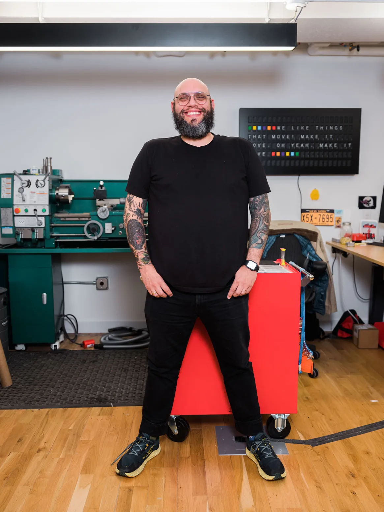
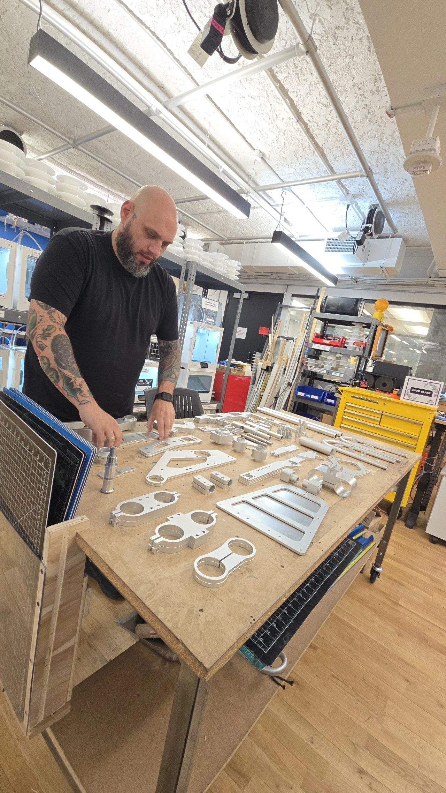

WE SEE YOU,
PHIL.
Phil Caridi is our choice for the 2026 David Payne-Carter Award for Excellence in Teaching.
ITP and IMA are lucky to have faculty who don't just teach but also make themselves present. Phil Caridi is always on the floor, always in the shop, always finding more hours in the day for students who need him. He carries a rare depth of knowledge in fabrication, but what makes him special is how generously he shares it: meeting every student where they are, guiding them through failure and iteration until an idea becomes something real they can hold in their hands.
STUDENT VOICES
"He puts the 'cool' in 'school.'"— ITP / IMA Student
"He truly dives in — an incredibly creative thinker and problem solver."— ITP / IMA Student
"He patiently explained difficult technical details in a way I could understand."— ITP / IMA Student
"An immeasurable understanding of how things work — and the patience to match."— ITP / IMA Student
"He pushed me to understand not just the how — but the why."— ITP / IMA Student
"Consistently goes above and beyond — from big-picture ideation to the nitty gritty."— ITP / IMA Student
WALL OF GRATITUDE
"Phil has found a way to take the effective nature of old-school, iteration-focussed engineering pedagogy and apply it in his own gentle way, while paying great attention to detail and maintaining abundant compassion for all of his students. I don't think I've ever been as fired up about a project as I was for the final he laid out for us in 'Large Scale Kinetic Installations.' And I certainly will never forget that fateful final install day, when he noticed that my partners had left me stranded to finish our installation alone, Phil went above and beyond to help me find a way to fasten a motor to my sculpture without batting an eye. He puts the 'cool' in 'school.'"
"Phil is one of the most hands-on instructors I've ever met – he truly dives in to support his students and is an incredibly creative thinker and problem solver. He's really good at building great team relationships among his students and guiding them to some of the most successful projects I've seen at ITP and IMA."
"Phil is the kind of teacher who's always around and has time for his students. He patiently answered all my questions, explained difficult technical details in a way I could understand, and would check in on how my projects were going whenever he saw me. I know he did the same for so many others, which shows just how much he cares about all of us."
"Since meeting him, Phil has been my go-to for bouncing off ideas or looking for guidance if I'm lost on a project. He has an immeasurable understanding of how things work and the most positive and patient problem-solving attitude to go with it."
"Working with and learning from Phil was one of the best parts about my time at ITP. He was always game to help me with a project and pushed me to understand not just the 'how' but the 'why'—Phil's knowledge and guidance really took my work to the next level."
"Phil consistently goes above and beyond to help anyone who needs it – from big picture project ideation to teaching the nitty gritty of how machines work. He's an incredible and patient source of knowledge and support who cares deeply about the success of his students."
"Phil is an amazing teacher that genuinely cares for a student's development. I am deeply appreciative of the ways he shares his knowledge with me both in and beyond the classroom. Whether it's a design, concept or fabrication problem, I know Phil will have a thoughtful and constructive response to my questions. He goes above and beyond to help students feel confident in their own practices. He empowers me to tackle projects that I didn't think were within my ability and continues to encourage me to create to this day."
"Phil has been instrumental in pushing the program forward by encouraging the students to embrace fabrication as a part of their design process. His approach not only evolved the curriculum but also enables students by introducing them to skills, tools, and techniques that he has gained from years of experience. Phil is always approachable and genuinely committed to supporting students at any level, fostering a welcoming and inclusive learning environment."
THE MAKER'S BLUEPRINT
[ PROFILE ]
Phil doesn't just teach fabrication; he builds ecosystems for creativity. Spanning an industrial design background from SCAD to managing the ITP Makerspace Lab, his career is dedicated to helping students bridge the gap between digital concepts and physical realities.
[ ACADEMIC LEADERSHIP @ NYU ]
- // Manager, Makerspace Lab, ITP Tisch (2023 - Present)
- // Adjunct Faculty: Large-Scale Kinetic Installation
- // Adjunct Faculty: Intro to Fabrication
- // Adjunct Faculty: Real-World Client-Centered Design Studio
- // Former Research Resident (2022 - 2023)
[ NOTABLE ACHIEVEMENTS ]
- // NYU Green Grant Awardee (2024) — Plastic Recycling Innovation
- // Silver IDEA Award, Industrial Design Society of America
- // Core 77 Design Awards Honoree
- // Co-Creator, SHiFT Design Camp (2013 - 2022)
- // Former RP Operations Manager — 47 rapid prototyping machines
